このサイトでできること
見られる範囲は、立場によって3段階。まずは会員登録（無料）から。
トップページ、サービス紹介、お問い合わせ、全国エリア調査（［弊社の見解］のレイヤーと印刷を除く）
全ツール（開発費シミュレーター、什器備品・リース、スキーム設計など）を回数の制限なく利用。全国エリア調査の［弊社の見解］と印刷も利用可。取扱案件の一覧と概要（所在地・名称などを伏せた状態）
その案件の所在地・名称・図面・写真・収支などの詳細。締結は案件ごと。2件目以降も同じ解除キーで表示
会員登録（無料）
メールアドレスとパスワードだけで登録できる。登録・利用は無料。
- 1トップページの「会員登録（無料）／ログイン」を押す（ヘッダーの「ツール」からも開ける）
- 2ログイン画面の上部で「新規登録（無料）」のタブを押す
- 3お名前（表示名）・メールアドレス・パスワード（8文字以上）を入れ、ボット確認にチェック
- 4「会員登録（無料）」を押す
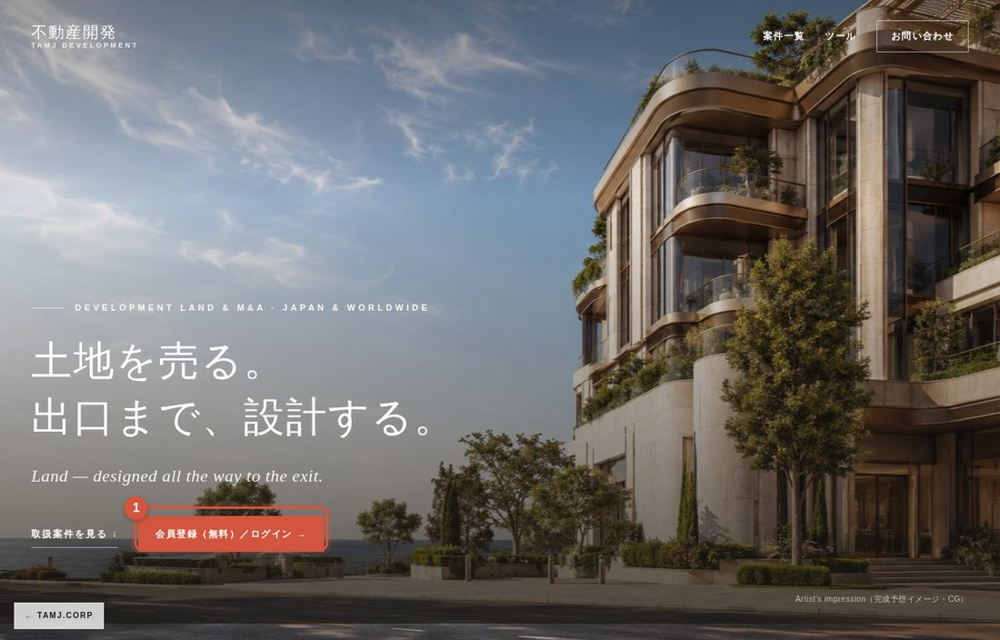
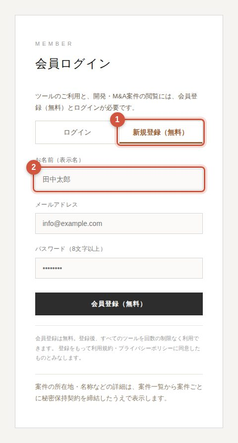
- 5届いた確認メールのリンクを開く（件名に「メールアドレスの確認」）
- 6「登録完了」と出たら、ログイン画面からログイン
ログイン・ログアウト
ログインは、ツール・案件のどちらからでも同じ画面。
- 1ヘッダーの「ツール」、またはトップの「会員登録（無料）／ログイン」を押す
- 2「ログイン」のタブで、メールアドレスとパスワードを入れる（関係者の方はメールアドレスの欄にID）
- 3「ログイン」を押す。案件やツールの画面から来た場合は、元の画面に戻る
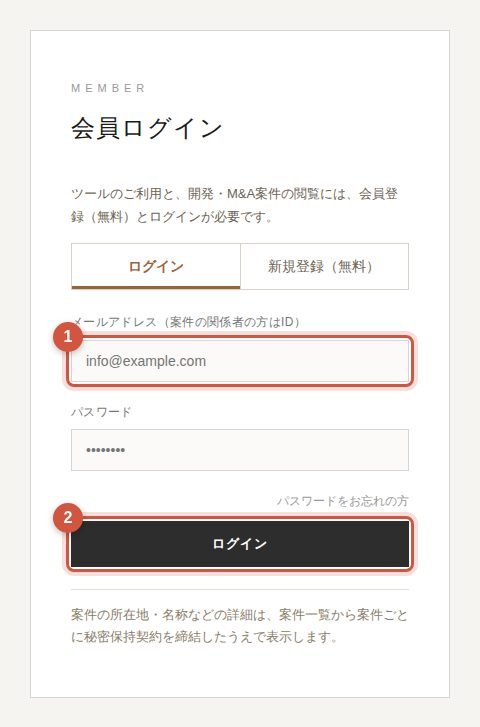
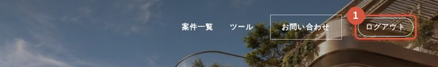
ログアウト
ログイン中は、ヘッダーの右端に「ログアウト」が出る。ツールの画面では右上の「ログアウト」。
パスワードを忘れたとき
ログイン画面の「パスワードをお忘れの方」から、登録したメールアドレスを入れる。再設定用のリンクがメールで届く。
ツールを使う
会員は全ツールを回数の制限なく利用できる。
ログイン後、ヘッダーの「ツール」で一覧が開く。
- 開発費シミュレーター：施設種別と規模から面積・建築費・投資額を概算
- 什器備品＋リース設計：数量の自動算出、購入とリースの比較
- オーナー収支計算・見積PDF：NOI・返済後CFの計算とPDF出力
- 財務設計・スキーム構造設計：SPC・運営会社・ファンドの比較
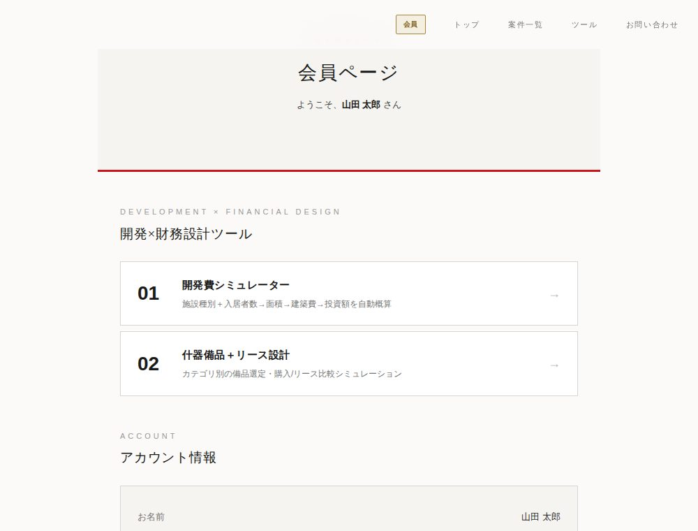
全国エリア調査
住所を入れると、全国どこでもハザード・周辺の医療介護施設・水害対策の目安を確認できる。
- 1トップページの「全国エリア調査」の欄に、住所・地名・駅名を入れる
- 2「調べる」を押すと、エリア調査のページで検索が始まる
- 3候補が出たら選ぶ。地図の右クリックやピンのドラッグでも地点を変えられる
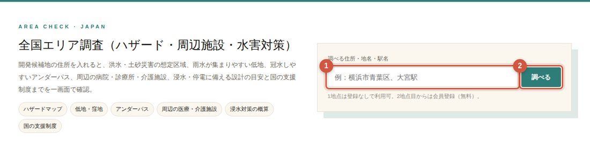
案件を見る
案件一覧と、各案件の概要（所在地・名称などを伏せた状態）は会員なら誰でも見られる。
- 1ヘッダーの「案件一覧」を押す（未ログインのときは右の画面が出るので、ログインまたは会員登録）
- 2見たい案件のカードを押す
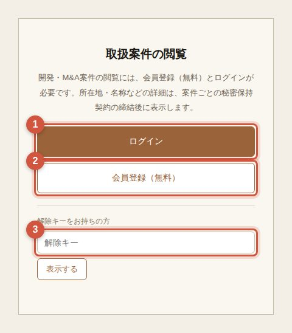
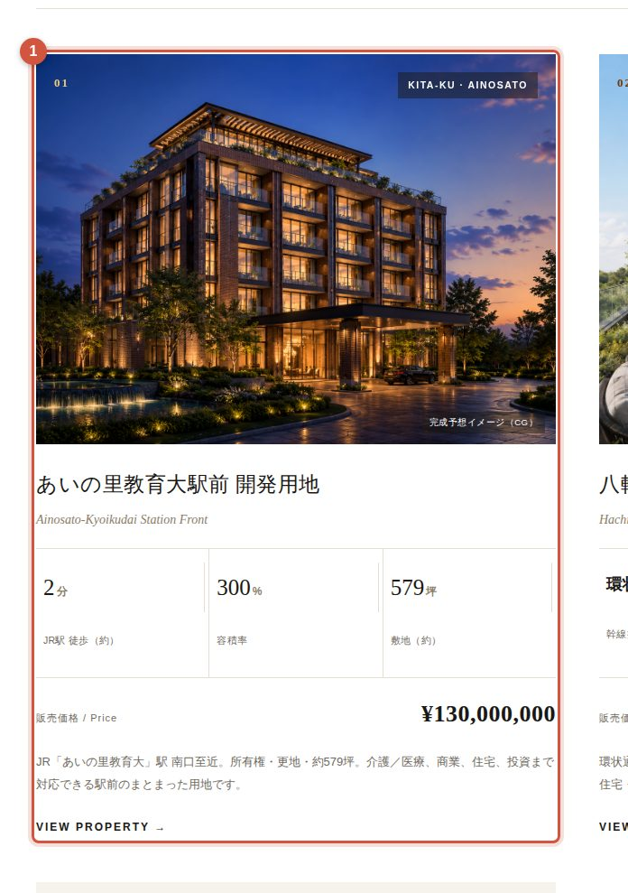
案件ページでは、灰色の帯で伏せた部分（所在地・名称など）と、締結後にだけ出るタブがある。上部のタブで各ページを切り替える。
案件ページの上部にある帯で操作する。
- ①「秘密保持契約を締結して詳細を見る」：締結の手続きへ
- ② 解除キーの入力欄：締結後にメールで届くキーを入れて「解除」
- ③「トップ」「案件一覧」：一覧やトップに戻る
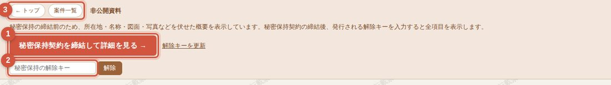
秘密保持契約を締結する
Web上で約3分。会社情報の入力 → メール確認 → 契約内容の確認と署名、の3段階。
- 1案件ページの「秘密保持契約を締結して詳細を見る」を押す
- 2対象案件・会社名・本店所在地・代表者名・電話番号を入れる（メールアドレスは会員登録のものが入る）
- 3「確認コードを送信」を押す
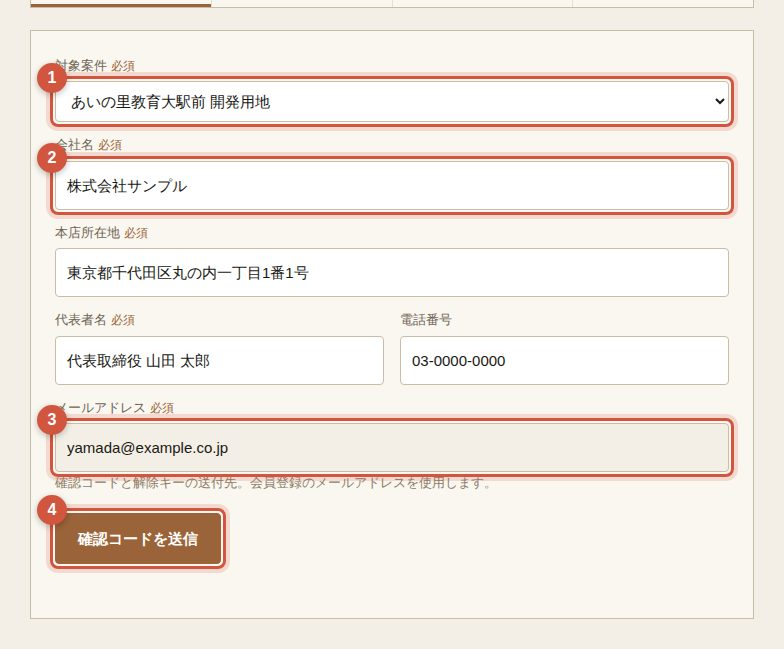
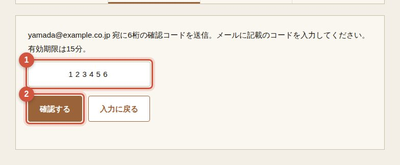
- 4メールに届いた6桁の確認コードを入れる（有効期限15分）
- 5「確認する」を押す
- 6契約内容を最後までスクロールすると、同意のチェックを入れられる
- 7署名欄には代表者名が入っている。署名する方が違う場合だけ書き換える
- 8電子印影を選ぶ。標準は会社名の丸印。「印影の文字を指定する」で自由に入力もできる（16字まで）
- 9「同意して締結する」を押す
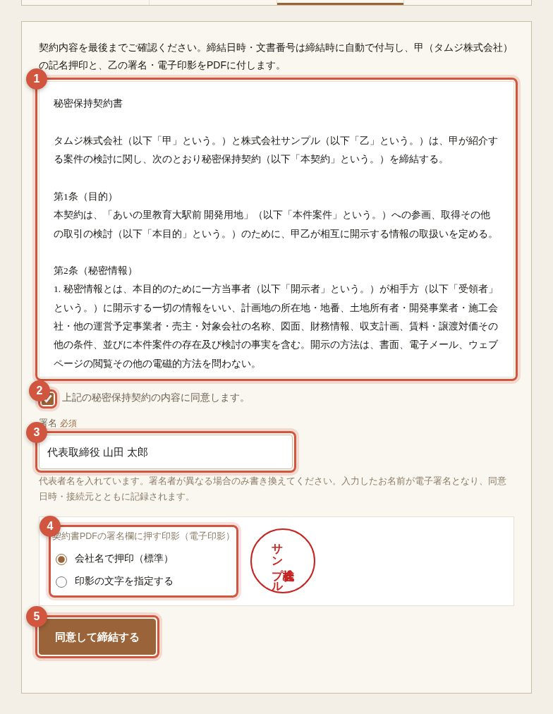
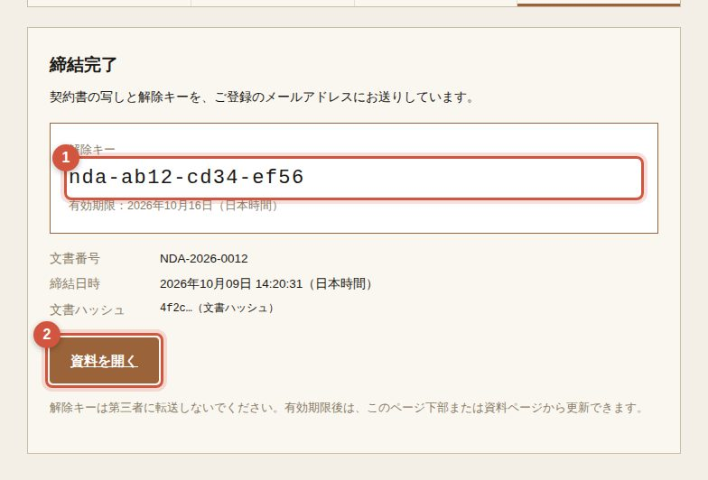
締結が終わると、解除キーが画面に出る。同じ内容と契約書のPDFがメールでも届く。「資料を開く」で、その案件の詳細が表示される。
2件目以降の案件
同じ会社なら、2件目以降は入力なしで締結でき、同じ解除キーで表示できる。
- 1次に見たい案件のページを開く（一度キーを入れたブラウザなら、自動でキーを使う）
- 2「この案件の秘密保持契約を締結」のボタンが出るので押す
- 3会社情報の入力とメール確認は省略。契約内容の確認・署名・電子印影だけで締結
- 4解除キーはそのまま。すぐに詳細が表示される
解除キーの期限と更新
解除キーの有効期限は発行から7日間。期限が切れたら、メール確認だけで新しいキーを出せる。
- 1案件ページの「解除キーを更新」、または締結ページの下部「解除キーの更新」を開く
- 2締結した案件と、締結時のメールアドレスを入れる
- 3届いた確認コードを入れると、新しい解除キーが出る（古いキーは使えなくなる）
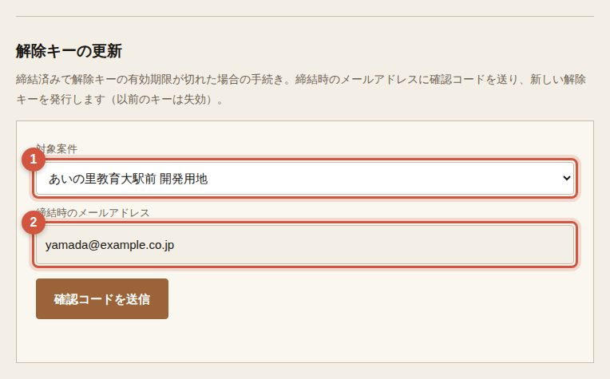
印刷・PDF保存
締結後の画面では、案件ページの「PDF」ボタン（または Ctrl＋P）で印刷・PDF保存ができる。
全ページの上下に、会社名・文書番号・印刷日時・通し番号。背景に会社名の透かし。
印刷は自社内の検討の範囲で。第三者への提供・転載は秘密保持契約で禁止。印刷の記録は弊社で管理している。
困ったとき
よくあるお問い合わせ。
確認メールが届かない
迷惑メールのフォルダを確認。ログイン画面で入力すると「確認メールを再送する」ボタンが出る。
ログインできない
メールアドレスの確認（確認メールのリンク）が済んでいるかを確認。パスワードを忘れた場合は「パスワードをお忘れの方」から再設定。
案件を開くとログインの画面が出る
案件の閲覧には会員登録（無料）とログインが必要。
解除キーが違うと出る
前後の空白が入っていないか、期限（7日間）が切れていないかを確認。期限切れなら「解除キーを更新」から。
別の案件で「秘密保持契約を締結」と出る
締結は案件ごと。2件目以降は入力なしで締結でき、キーはそのまま使える。
パソコンを変えたら伏せたままになった
解除キーはブラウザごとに覚えている。新しいブラウザで案件ページを開き、キーを入れて「解除」。
エリア調査で登録画面が出る
［弊社の見解］のレイヤーと印刷・PDF保存は会員限定。会員登録（無料）でログインすると利用できる。
印刷すると白紙になる
締結前の画面は印刷できない。締結後の画面で「PDF」ボタンから。
お問い合わせ
解決しないときは、メールで。
ご登録のメールアドレス（関係者の方はID）、見ていた画面、表示されたメッセージを添えていただくと、やり取りが早く済む。